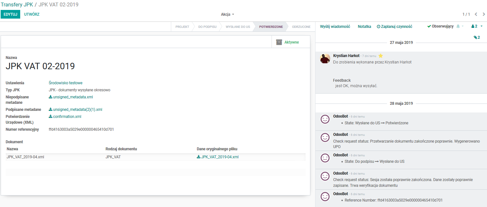
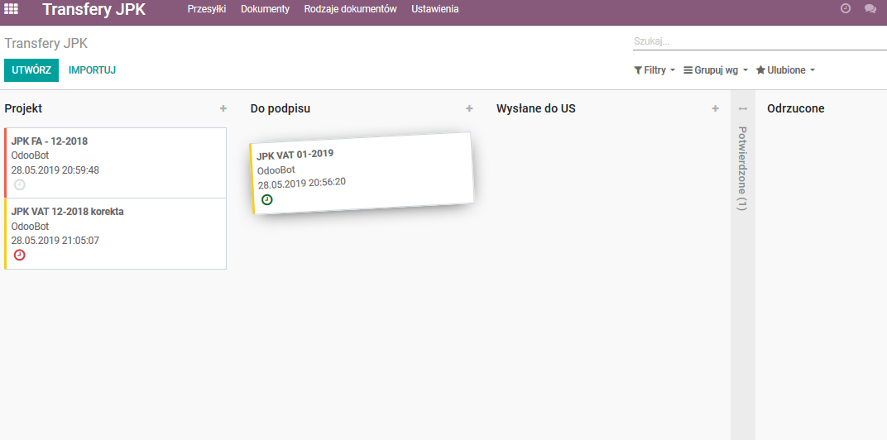

Moduł do wysyłki plików JPK do Ministerstwa Finansów bezpośrednio z Odoo, eliminuje potrzebę dodatkowych programów przesyłających pliki JPK.
Moduł przechowuje całą historię komunikacji i zdarzeń związanych z obsługą JPK.
Przejrzysty widok kanban pozwala na szybką wizualizację statusów dokumentów, a standardowe funkcjonalności Odoo na zaplanowanie właściwych działań.
Moduł ten pozwala także na wysyłanie plików wygenerowanych z innych systemów ERP/FK (innych niż Odoo).
Podpis metadanych (podpisem kwalifikowanym czy Profilem zaufanym) odbywa się przy użyciu narzędzi dostarczanych przed dostawcę rozwiązania podpisu kwalifikowanego lub stronę pz.gov.pl.
Wymaga zainstalowania zewnętrznego modułu: cryptography.
UWAGA: istnieje możliwość zamówienia prac związanych z generowaniem danych do plików JPK (ich logika tworzenia jest uzależniona od parametryzacji konkretnej instancji Odoo i wymagań klienta).


Wspiera wersję 14 Odoo.
English Description:
Odoo module to send JPK files to the Ministry of Finance directly from the app, eliminates need for external tools to transfer those files.
This moduke keeps all communication and status history in regards to JPK transmission and statuses.
Perspicuous kanban views presents status of the documents and built-in Odoo functionalities - to manage them properly.
Using this module, you have a possibility to transfer other files (not generated by Odoo) e.g. exported from other ERP/Financial systems.
Digital signing of the metadata file is being done with tools provided by Digital Signature Vendor or directly uzing PZ (Podpis Zaufany) on the MF page pz.gov.pl.
Requires external module: cryptography.
NOTE: there is a possibility to order JPK generation module from us (this is customized per Odoo instance and customer requirements, because depends on specific Odoo configuration).
Supports Odoo version 14.